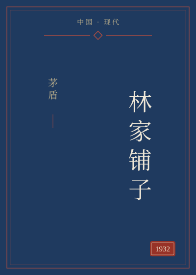
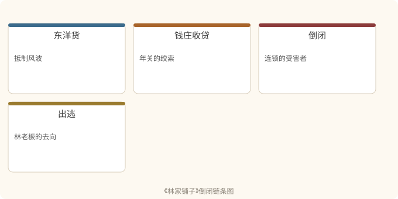

林家铺子
一、基本信息
| 作者 | 茅盾 |
|---|---|
| 成书/出版 | 1932年（通说待核；作者页 B078 口径：major_works 载'林家铺子、春蚕'） Mao Dun — Encyclopaedia Britannica（百科全书） |
| 国别/地区 | 中国 |
| 时代 | 现当代 · 现代 |
| 体裁 | 中篇小说 |
| 语言 | 汉语（白话） |

《林家铺子》倒闭链条图（主题·结构图）
二、创作背景
作者页（B078）：茅盾 major_works 载'林家铺子、春蚕'（B078 作者页定位——详见 ziye 条核对）。
题材（通说）：1932年'一·二八'战事前后江南小镇杂货铺的倒闭——民族危机下的经济微景观。
三、内容脉络
林老板年关的挣扎：东洋货风波、钱庄收贷、倒闭出逃（通说待核）。
小股东、朱三阿太们的血本无归——倒闭的连锁（通说待核）。
四、主要人物表
| 人物 | 身份 | 说明 |
|---|---|---|
| 林老板 | 杂货铺主 | 勤勉而破产（通说待核） |
| 寿生 | 店员 | 忠心的帮手（通说待核） |
五、主题与艺术特点
- 大鱼吃小鱼：经济危机的传导（通说）。
- 小镇的微宏观（通说）。
- 社会剖析派的细描（通说待核）。
六、影响与评论
- 作者页：茅盾短篇代表作（B078 作者页口径）。
Mao Dun — Encyclopaedia Britannica（百科全书） - 1959年水华同名电影（通说待核）。
Mao Dun — Encyclopaedia Britannica（百科全书）
七、阅读建议
难点
- 1930年代金融与关税背景。
- 茅盾的社会科学笔法。
- 《茅盾全集》（人民文学出版社，通说待核）。
先《子夜》后本作；再读《春蚕》。
八、待核实
- 1932年发表（《申报月刊》创刊号说）核对。
- 林老板/寿生人名核对。
- 1959年电影（水华导演）待核。
本页主要来源
茅盾的其他收录作品：子夜